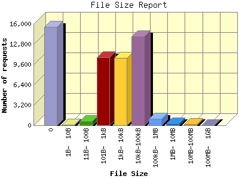

Analog 6.0
Analog 6.0 Report Magic 2.21
Report Magic 2.21The File Size Report categorizes the size of the file being requested. This can be useful in optimizing site performance. (Remember that on a 28.8Kps modem, it will take on average of 40 seconds to download 100Kb of data.)

| File Size | Number of requests in the last 7 days | Percentage of bytes transferred in the last 7 days | Number of requests | |
|---|---|---|---|---|
| 1. | 0 | 23 | 0.00% | 15,545 |
| 2. | 1B- 10B | 0 | 0.00% | 83 |
| 3. | 11B- 100B | 4 | 0.00% | 698 |
| 4. | 101B- 1kB | 56 | 0.09% | 10,696 |
| 5. | 1kB- 10kB | 45 | 0.47% | 10,679 |
| 6. | 10kB-100kB | 72 | 5.59% | 13,994 |
| 7. | 100kB- 1MB | 8 | 3.03% | 1,021 |
| 8. | 1MB- 10MB | 0 | 0.00% | 255 |
| 9. | 10MB-100MB | 1 | 90.81% | 226 |
| 10. | 100MB- 1GB | 0 | 0.00% | 5 |
This report was generated on July 5, 2009 11:22.
Report time frame January 29, 2009 19:59 to July 4, 2009 22:44.
| Web statistics report produced by: | |
| Analog 6.0 | Report Magic 2.21 |